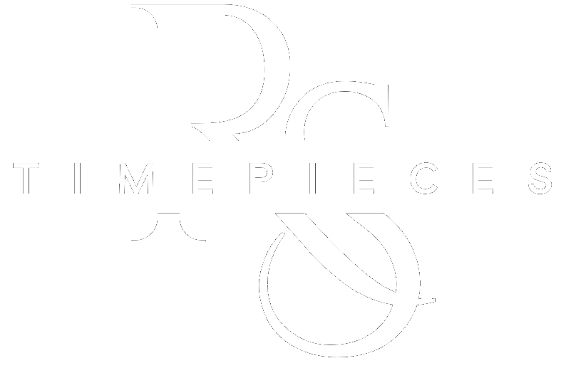

Resume & Skills
Resume
To directly view my resume, tap the icon above!
Introduction
This page features my professional resume along with a breakdown of my technical skills, soft skills, experience, and academic background. It provides a clear overview of the strengths I've developed throughout my CIS studies and work, and highlights the abilities I bring into web development, cybersecurity, and future industry roles
Skills
Programming & Markup
- Python
- Java
- HTML5
- CSS3
- SQL
Scroll Left to see more!
Operating Systems
- MacOS
- Windows
- Linux
Scroll Left to see more!
Network & Security
- Networking Foundations
- TCP/IP model
- Network Protocols & Ports
- Tcpdump
- Wireshark
- Defense in Depth
- Principle of Least Privilege
- Encryption
Scroll Left to see more!
Databases
- SQL Fundamentals
- ERD Model
- Conceptual Modeling
- Logical Modeling
- Normalization
Scroll Left to see more!
Transferrable Skills
- Communication
- Teamwork & Collaboration
- Problem Solving
- Time Management
- Attention to Detail
- Adaptability
- Curious
Scroll Left to see more!
Experience

Rstimepieces
I founded and operated rstimepieces as a sole proprietor, running a custom Seiko watch-modding business that generated over $50,000 in sales through high-quality craftsmanship, customer service, and strong brand development. I managed every aspect of the business, including client communication, watch design and assembly, sourcing components, budgeting, marketing, and order fulfillment. This hands-on entrepreneurial role strengthened my ability to coordinate projects independently, deliver consistent quality, and maintain strong, long-term client relationships
Skills Acquired
- Communication
- Time Management & Organization
- Attention to Detail
- Adaptability
- Problem Solving
- Client Relations
Scroll Left to see more!
Marklan Bottle Depot
At Marklan Bottle Depot, I worked in a fast-paced, customer-focused environment where I was responsible for assisting customers, organizing materials, and supporting day-to-day operations. Although not a technical role, this experience helped me build strong transferable skills
Skills Acquired
- Teamwork & Collaboration
- Communication
- Time Management & Organization
- Attention to Detail
- Adaptability
- Problem Solving
- Efficiency
- Customer Service
Scroll Left to see more!
Education
Mount Royal University
I am a second-year student completing my Bachelor of Computer Information Systems at Mount Royal University, with an expected graduation date of April 2028. I have maintained strong academic performance, earning a place on the Dean's Honour Roll in Fall 2024 with a GPA of 3.8+ for the 2024-2025 year. My coursework has provided a solid technical foundation in programming (Python, Java), web development (HTML & CSS), and databases (SQL and data modeling)
Certifications & Skill Paths
This section highlights the certifications, training, and independent learning I pursue outside of school. These represent the skills I continue to build on my own time through online courses, structured programs, and self-directed study. In order to strengthen my technical foundation and support my long-term goals in cybersecurity and software development. Below completed certifications and skill paths will be displayed in green, while certifications and skill paths in progress will be displayed in red
- Google Cybersecurity Certificate
- Code Academy Full Stack Engineer
- CompTIA networking+
- CompTIA security+
Scroll Left to see more!